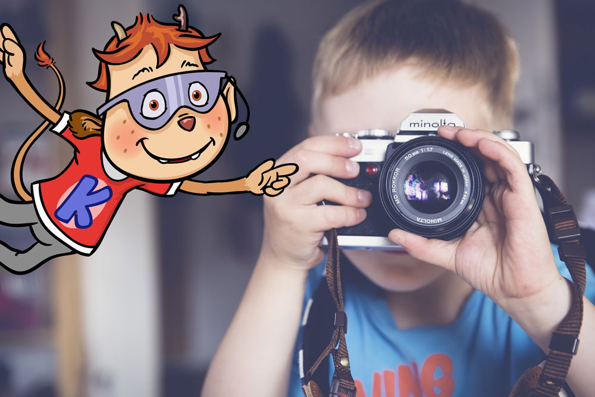
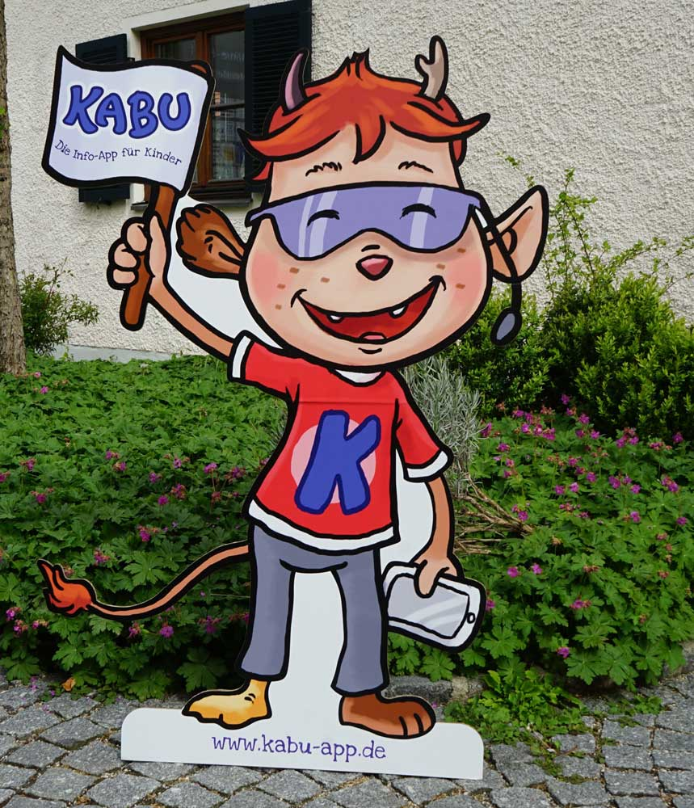
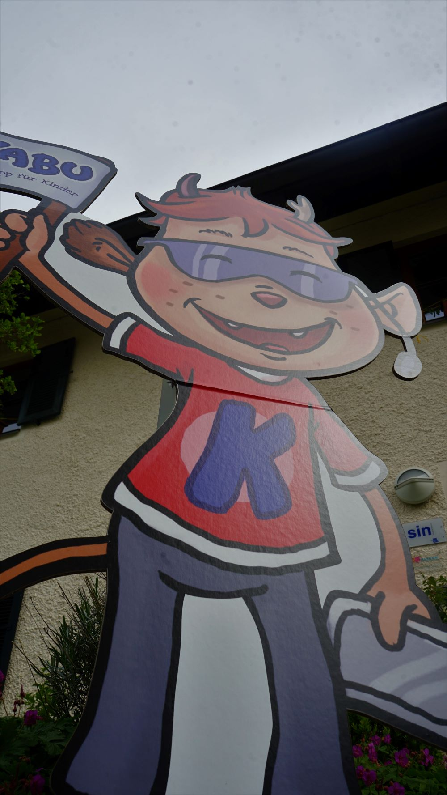
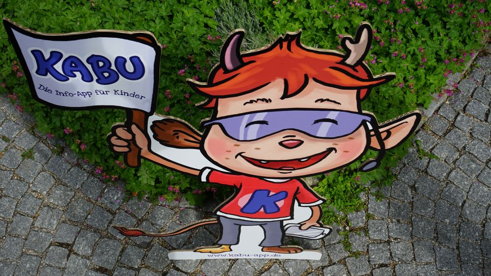
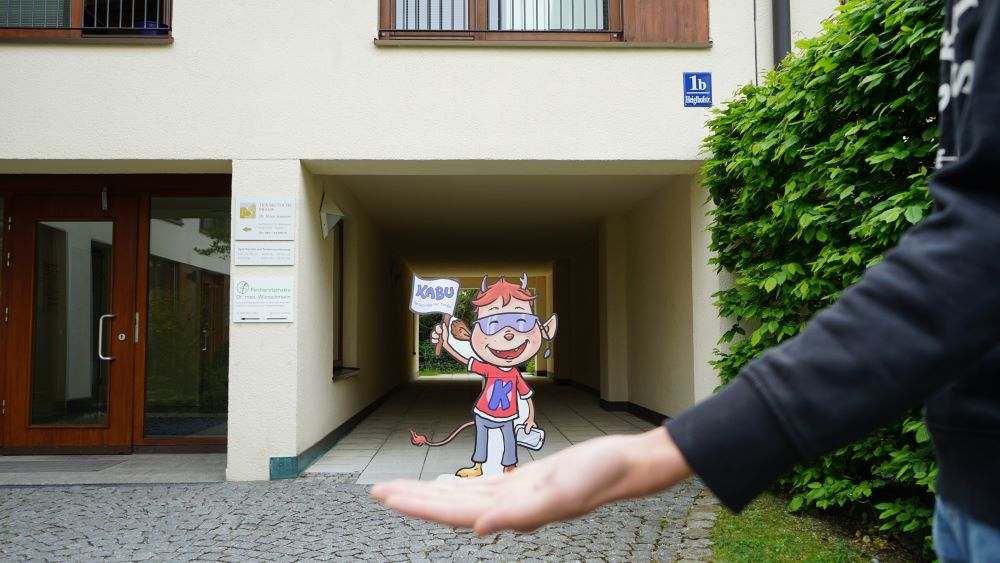
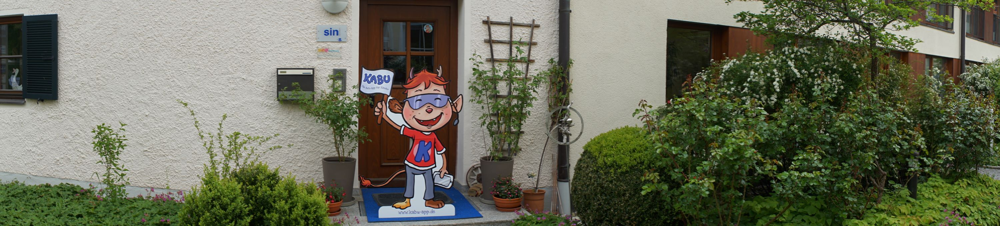
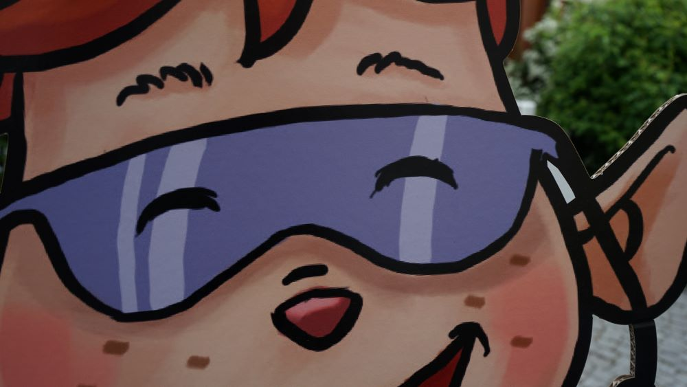

Wie du dein Foto spannender machst
Kennst Du das: Du hast einen tollen Gegenstand gefunden und möchtest ein spannendes Bild davon machen, aber das Foto sieht irgendwie langweilig aus? Dann haben wir jetzt die Lösung für Dich!
Fotos können nämlich aus ganz verschiedenen Positionen gemacht werden. Wie kann man aber das Motiv (= also das, was du fotografieren möchtest) faszinierender zeigen?
Dazu musst Du Dein gewünschtes Motiv von einem anderen Ort oder auf einer anderen Höhe aufnehmen. Du kannst die Kamera zum Beispiel auf den Boden legen und dann ein Foto machen. Dann hast du den Blickwinkel verändert. Diesen Blickwinkel nennt man Perspektive.
Welche Perspektiven gibt es noch? Was machen diese mit Dir, wenn Du sie ansiehst? Tipps findest du in diesem Video und unten im Text:
Normalperspektive
Die Normalperspektive erkennst Du daran, dass Dein Motiv auf Augenhöhe fotografiert wird. Fast alle Aufnahmen werden mit der Normalperspektive geschossen, da es für uns bequem und normal ist, aus dem Stand zu fotografieren.
Wann solltest Du diese Perspektive eigentlich benutzen?
Du solltest diese Perspektive benutzen, wenn Du Deine Umgebung abbilden willst, wie du sie mit Deinen Augen siehst. Außerdem benutzt Du die Normalperspektive, wenn Du von einer Person ein Portrait Foto machen willst.

Froschperspektive
Die Froschperspektive erkennst Du daran, dass das Bild unter der Augenhöhe fotografiert wird, wie ein Frosch, der von unten nach oben schaut. Dadurch kommen Gegenstände sehr groß raus.
Wann solltest Du diese Perspektive eigentlich benutzen?
Du solltest die Perspektive benutzen, wenn Du etwas sehr mächtig darstellen willst. Zum Beispiel wirkt eine Person von unten größer und vielleicht bedrohlich.

Vogelperspektive
Die Vogelperspektive erkennst Du daran, dass man wie ein Vogel von oben nach unten schaut. Diese Perspektive erreichst Du, wenn Du auf einem etwas höheren Platz stehst und von dort nach unten fotografierst.
Wann solltest Du diese Perspektive eigentlich benutzen?
Diese Perspektive benutzt Du, um schöne Landschaften zu fotografieren oder etwas Größeres, wie z.B. eine Stadt. Das ist meistens nur möglich, wenn Du auf einer höheren Ebene bist.

Kreativperspektive
Die Kreativperspektive erkennst Du daran, dass das Bild so geschossen wurde, dass es scheint, als ob das Foto nicht echt sein kann. Da Personen oder Gegenstände überdimensional groß aussehen.
Wann solltest Du diese Perspektive eigentlich benutzen?
Diese Perspektive benutzt Du, wenn du kreative oder auch witzige Aufnahmen machen willst. Solche Fotos erreichst Du, indem Du zwei Objekte hast. Das eine Objekt ist im Hintergrund und das zweite Objekt ist im Vordergrund. Dadurch ist das Objekt im Hintergrund kleiner als das Objekt im Vordergrund und somit kannst Du viele lustige Fotos schießen.

Panoramaperspektive
Die Panoramaperspektive erkennst Du daran, dass das Bild als „Ganzes“ geschossen wurde und jedes Detail zu sehen ist.
Wann solltest Du diese Perspektive eigentlich benutzen?
Diese Perspektive benutzt Du, um Landschaften, Städten oder auch Personengruppen zu fotografieren, die sehr weitläufig sind.

Nahperspektive/Großaufnahme
Das ist eine sehr beliebte Perspektive. Meistens geht es um ein kleines Detail. Du gehst dabei ganz nah an den Gegenstand heran und schießt ein Foto. Auf dem Foto sieht das Detail dann sehr viel größer aus als in echt.
Wann solltest Du diese Perspektive eigentlich benutzen?
Wenn Du einen kleinen Gegenstand interessant machen oder anderen zeigen willst, wie dieser Gegenstand eigentlich groß aussieht.

Jetzt weißt du, was man alles mit verschiedenen Perspektiven anstellen kann und vor allem, welche Wirkung sie damit auslösen.
Viel Spaß beim Fotografieren und Experimentieren wünscht dir die KABU-Redaktion
💭 RoboBoard Viel Spaß beim Fotografieren und Experimentieren wünscht dir die KABU-Redaktion